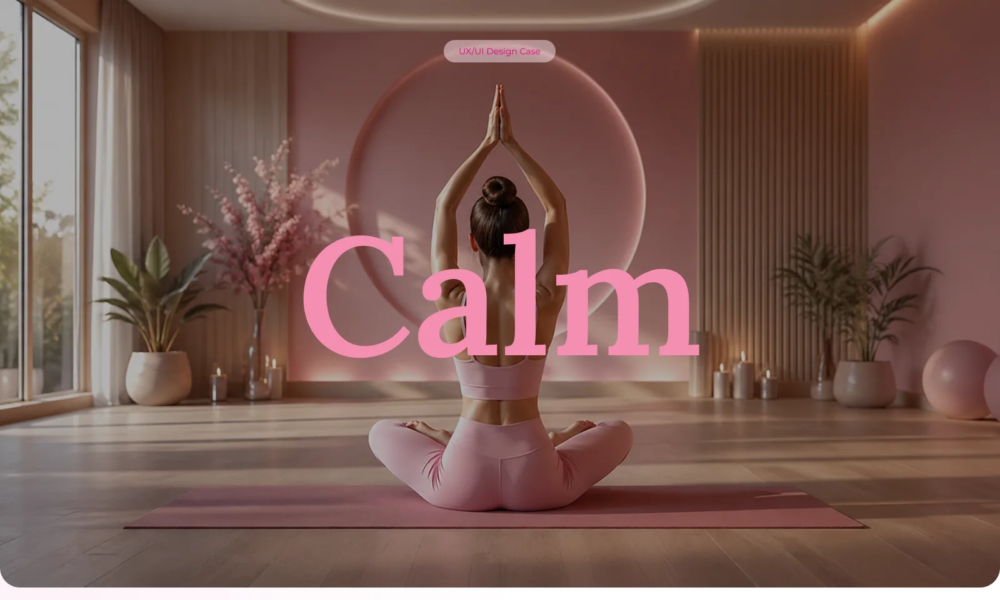
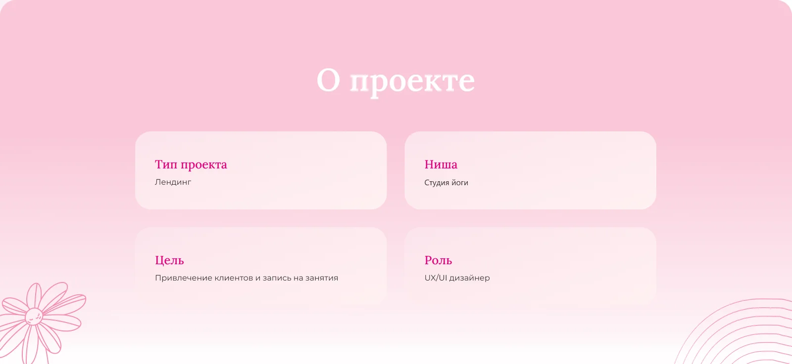
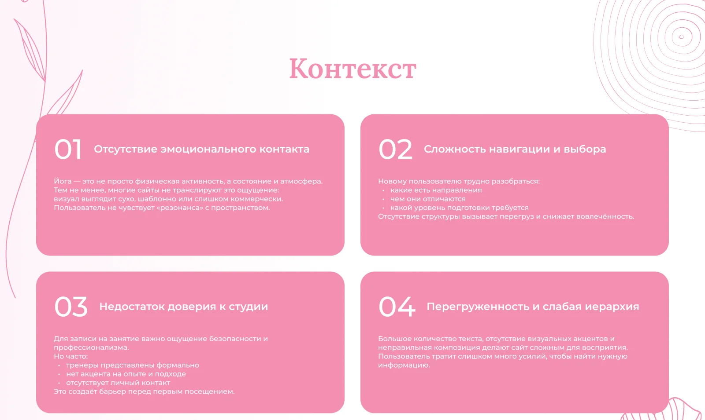
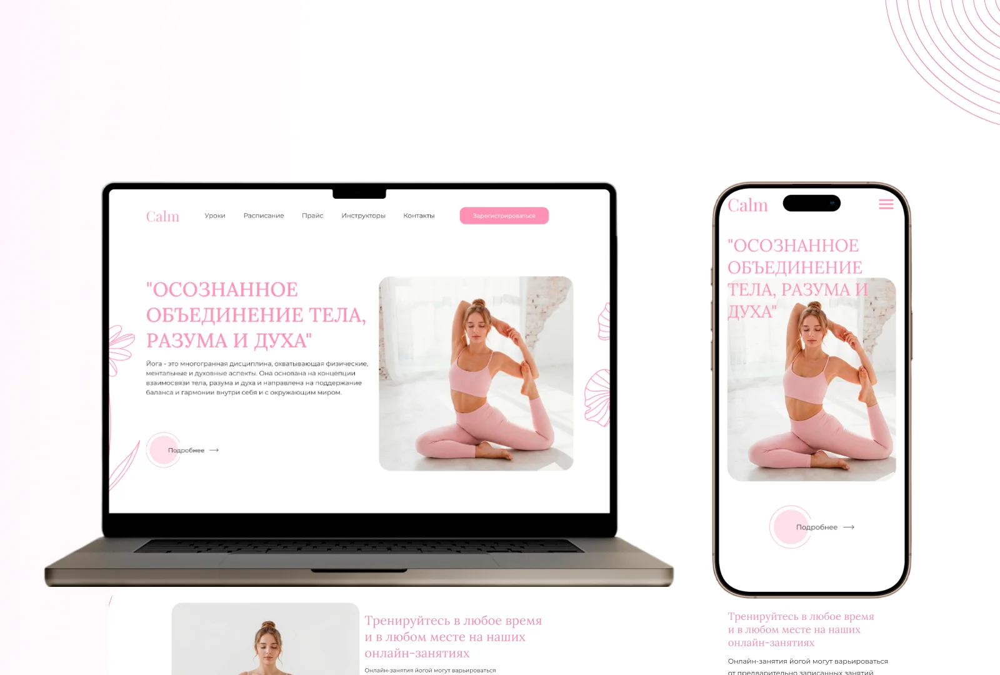
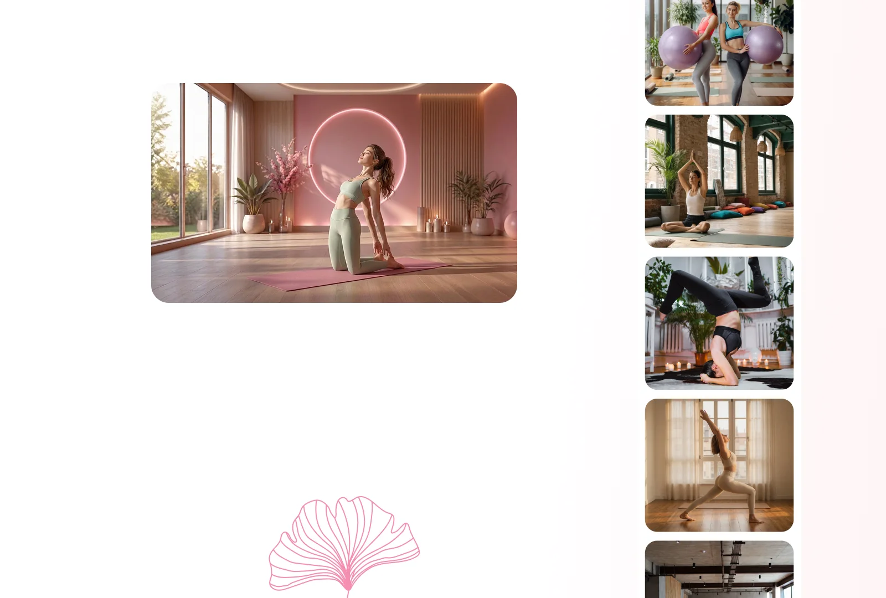
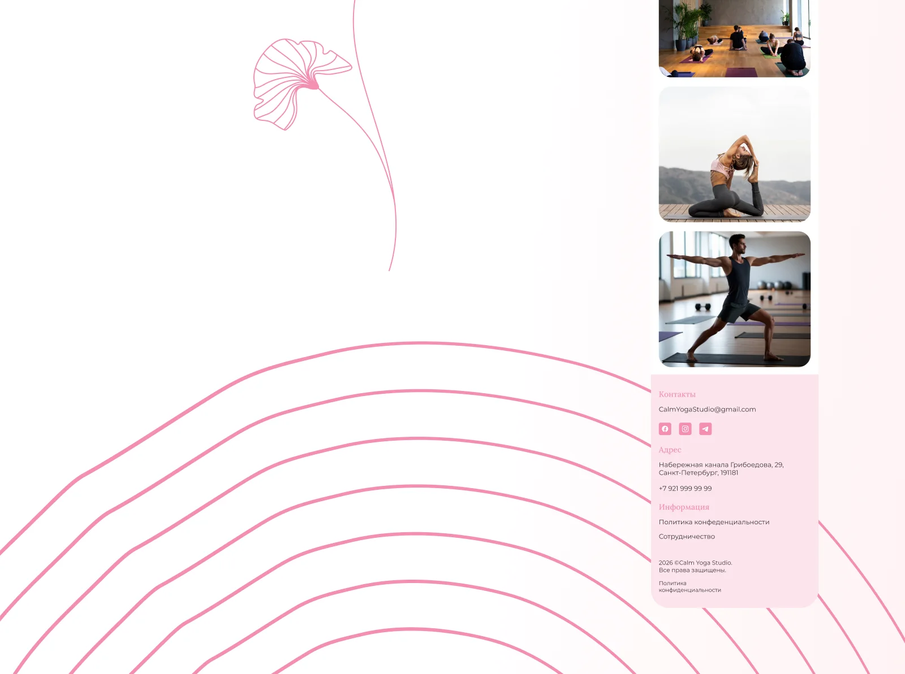

Calm: сайт для студии йоги
Дизайн сайта для студии йоги Calm: фирменные цвета, типографика, десктопная и мобильная версии. Кейс студии VIDIPROK, Санкт-Петербург.










Дизайн сайта для студии йоги Calm: фирменные цвета, типографика, десктопная и мобильная версии. Кейс студии VIDIPROK, Санкт-Петербург.





